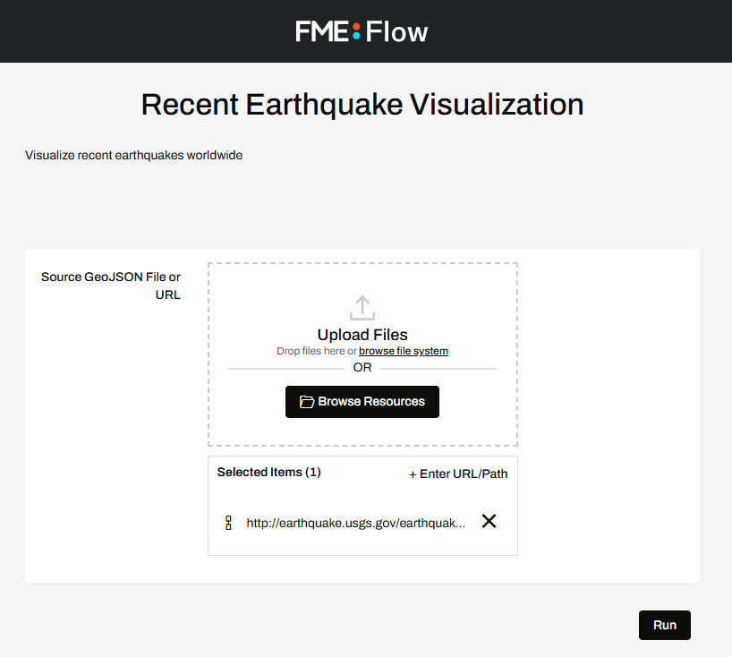

After completing this lesson, you’ll be able to:
You have successfully published a workspace to FME Flow that creates a 3D visualization of recent earthquakes around the world in KML format, using data from the United States Geological Survey. Now you are getting requests from other users who do not have FME Flow accounts but want to be able to run the workspace on demand.
Let's create an FME Flow App so that anyone with the URL can run this workspace to get an up-to-date KML whenever they wish.
Go to the FME Flow interface and log in.
If you are taking a Safe Software-hosted training course, you can access FME Flow at http://localhost/.
Expand Flow Apps from the side menu, then click Create Workspace App, to create a new Workspace App.
Set a Name, Title, and Description for your new Flow App. The Name is what is displayed in the list of Workspace Apps and the Title and Description is what will be displayed on the actual App.
For this exercise, we will use the following:
Name: earthquake-extrusion
Title: Recent Earthquake Visualization
Description: Visualizes recent earthquakes worldwide.
Select the Samples Repository and the earthquakesextrusion.fmw workspace. Select ‘Data Streaming’ as the Service. This will allow the information to be streamed back to the user directly within the browser (if supported).
You can leave the expiration time at its default value, which will allow the API Token to expire after 10 years. You could set this to a shorter time if you only want to grant access for a smaller time window.
Keep the Require Authentication toggle disabled. This setting will allow anyone with the URL to run the workspace.
Keep the Users Can Upload toggle enabled. This setting will allow users to upload their own GeoJSON input file instead of using the USGS data.
There are two collapsed sections below the first: Parameters and Customize. Click the Parameters section to expand it. You will see the workspace's user parameters, similar to how they appear on the Run Workspace page on FME Flow. You can see the source dataset is set to a URL (http://earthquake.usgs.gov/earthquakes/feed/v1.0/summary/2.5_week.geojson), pulling the recent earthquake data directly from the USGS web service.
By default, Show in App is selected for the parameter, and you can leave this as it is so app users can have the option of uploading their own GeoJSON file or using the USGS API as the default value.
Click OK to create the App.
Now that your App has been created, you'll see that a URL was generated for it.
Click on the URL to open the app. You will see that it opens a webpage very similar to the Run Workspace page in FME Flow, but it has no options other than to run this one workspace and it does not require a user to enter a username and password to access it.

While this looks great, your Flow App is intended to be public-facing so you want to have your brand reflected on the page. Flow Apps can be customized to your own brand with logos, images, and colour.
Now you've created a Flow App that can be shared with non-FME Flow users to be able to use FME functionality and access your data. You've also begun customizing Flow Apps with images, logos, and colours.


{kind=link}